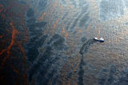

Acerca del Proyecto
Conoce la importancia de este proyecto y su razón de ser.
Duis neque nisi, dapibus sed mattis et quis, nibh. Sed et dapibus nisl amet mattis, sed a rutrum accumsan sed. Suspendisse eu.
Duis neque nisi, dapibus sed mattis et quis, nibh. Sed et dapibus nisl amet mattis, sed a rutrum accumsan sed. Suspendisse eu.
Duis neque nisi, dapibus sed mattis et quis, nibh. Sed et dapibus nisl amet mattis, sed a rutrum accumsan sed. Suspendisse eu.
With a much smaller subtitle hanging out just below it
Conoce la importancia de este proyecto y su razón de ser.